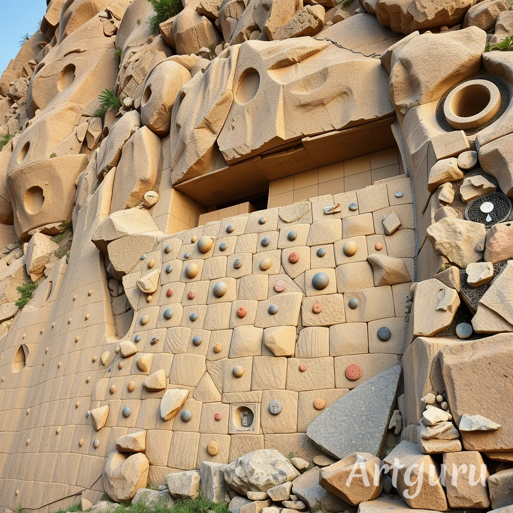
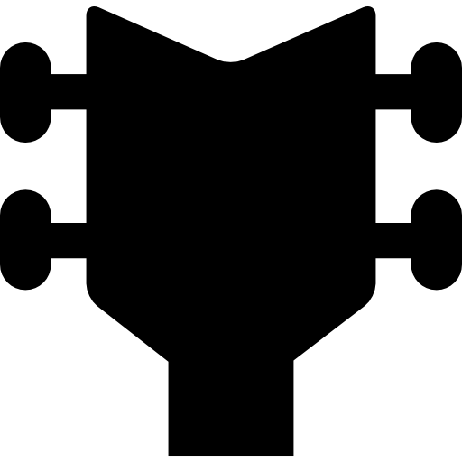
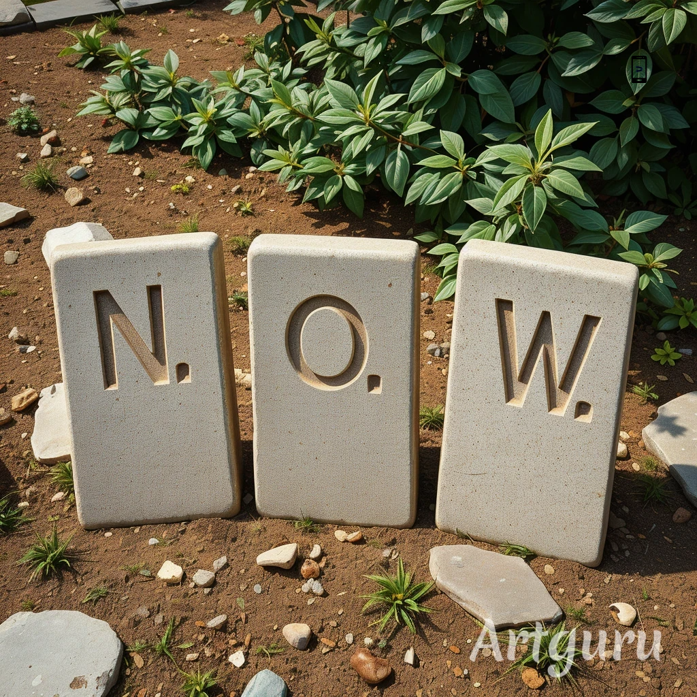
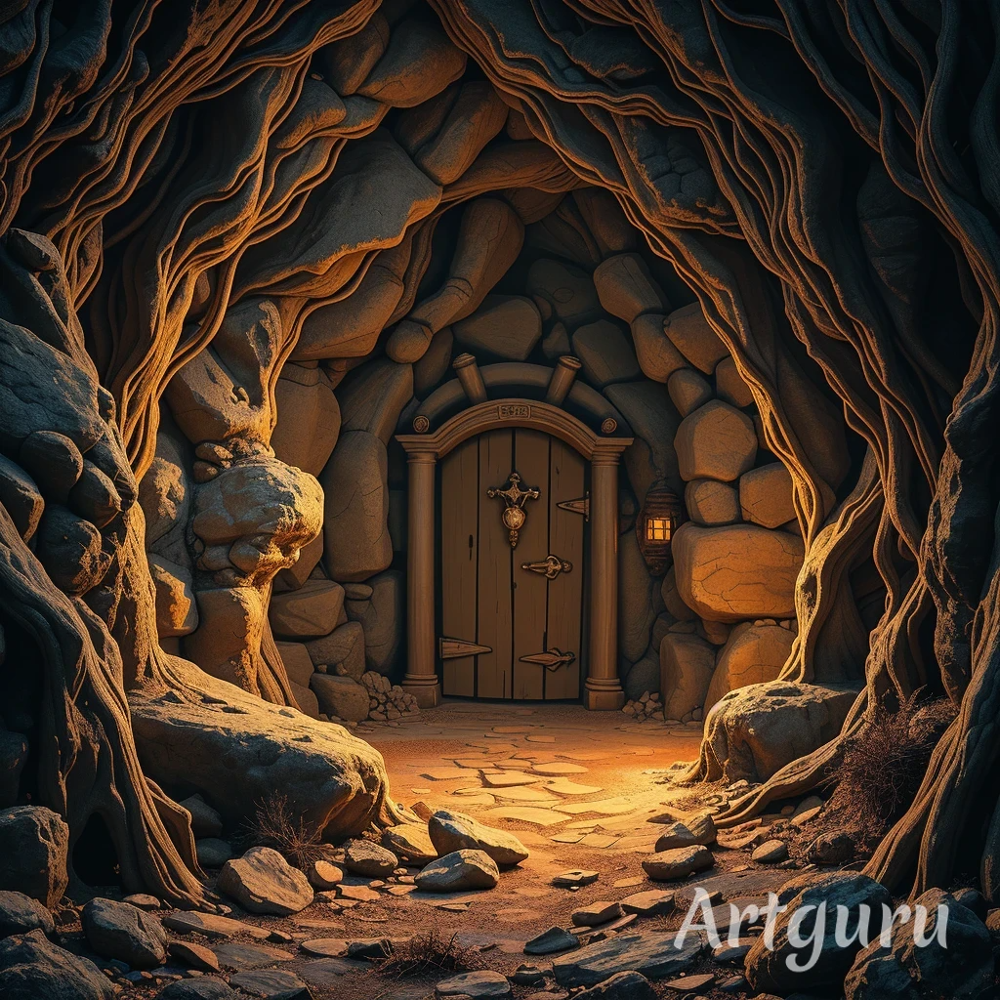
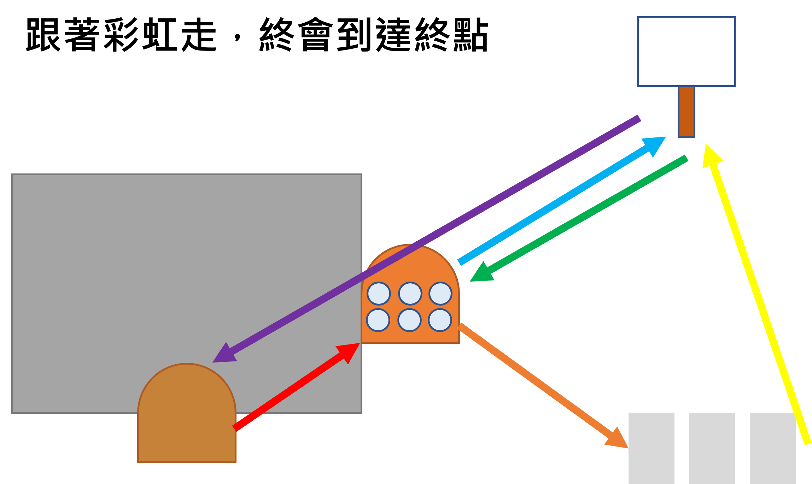
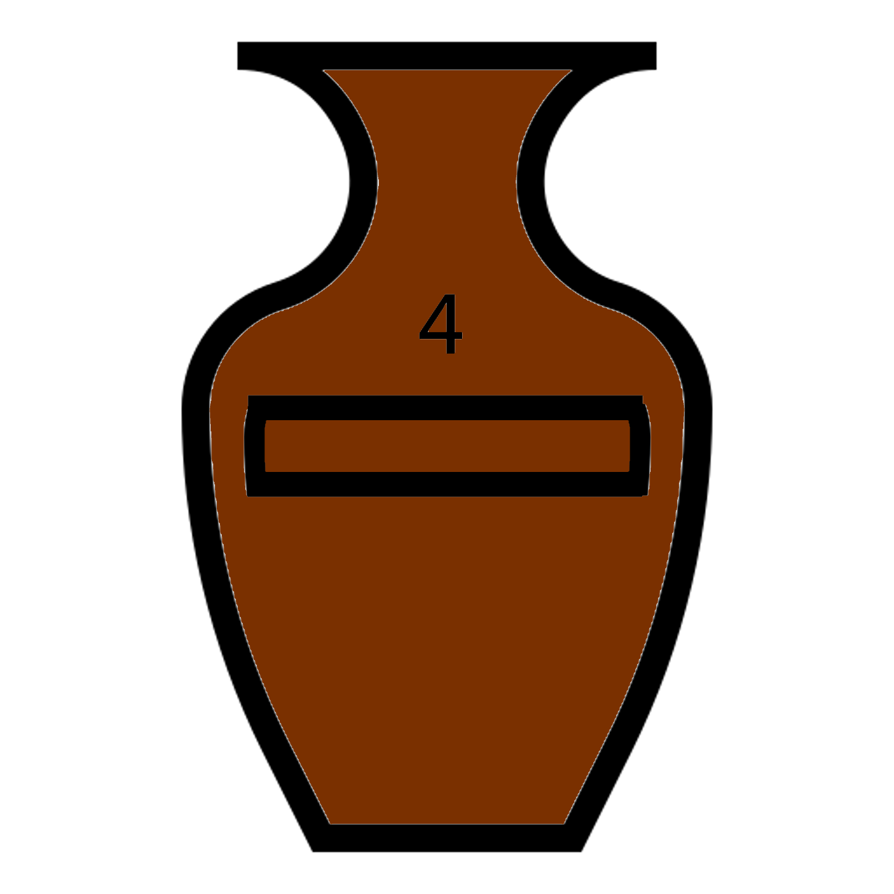

在一陣煙霧後，旁邊的石牆猛然向兩側滑開
原以為會有一條通道的你，發現後面出現了另外一面石牆。
牆上出現了許多的按鈕，以及一段文字...
同時附近也出現了一段悠揚的音樂，
你感覺只要找到音樂的源頭就可以有一些線索...
打開的神祕門



似乎可以掃描什麼
牆壁附近的告示牌
在石門附近有一個怪異的告示牌，上面的一些圖案吸引你的注意!

隱藏的道路
透過深海指引者你發現一條隱藏的道路，順著道路走下去，在道路盡頭發現了三個文字石塊

再這些文字旁邊掉落了一張紙，但有一些破損了，只能隱約看出破損的似乎是同一個數字...

開啟的石門
在石牆打開後，出現一條曲折蜿蜒的道路
道路盡頭似乎有一個祭壇，你正苦思著要如何穿過這裡...
忽然發現在不遠處有一扇門，但門上沒有任何手把以及鑰匙孔
只有一幅畫掛在上面，如果能打開的話似乎可以直接抵達終點...

總覺得這幅畫很眼熟....說著你四處走訪，希望能找出開門的方法

祭壇位置
將門打開後，你發現有一條直通最後祭壇的道路，在祭壇上裡著一封信...(請找出祭壇)

魚之國戰
當你把花與深海指引者一同供奉在祭壇時
一段不屬魚你的記憶湧進，你發現這是一場星杯大戰的紀錄，你將腦中的紀錄記下...

同時...你也想起你就是曾經來到這裡的那條魚，將得到的寶物一起留在船上了...